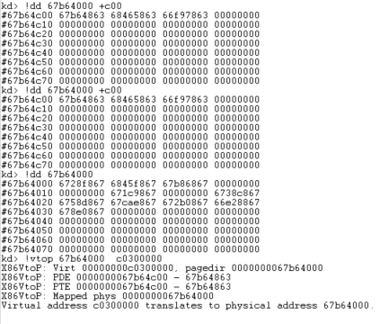

利用代码挂物理页上
使用线性地址0xc0300000修改PDE
0x01验证线性地址0xc0300000的PDT、PTT、此地址的物理页为同一物理页

如图所示，所以修改pde可以是这个样子
mov dword ptr ds:[0xc0300000+N*4], xxxxxxx
//对0地址挂pde
mov dword ptr ds:[0xc0300000], xxxxxx
其他内容：低2G：0-7fffffff,每个进程都不一样，开始和最后的64k没有映射
高2G：80000000-ffffffff，每个进程都是一样的。